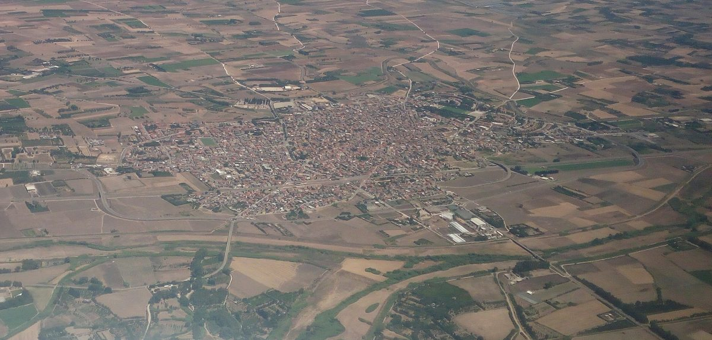

이탈리아 사르데냐 세라만나 시장, 발전소 있는 지자체에 주 재원 고정 배분하는 '에너지 생산지역 기금' 제안

영농형 태양광 준공식서 "보상 넘어 생산 이익을"…새 세금 대신 주가 이미 받는 에너지 세수 일부를 돌리자는 구상, 비옥한 농지 지키는 입지 계획도 요구
이탈리아 사르데냐섬 남부 세라만나의 가브리엘레 리테라 시장이 발전소를 품은 지자체에 주(州) 재원을 고정적으로 나눠 주는 '사르데냐 에너지 생산지역 기금'을 만들자고 제안했다. 리테라 시장은 기업 그루포 푸투라가 핌피수 지역에 지은 첨단 영농형 태양광 준공식에서 이 구상을 내놓으며, 2024년 사르데냐의 발전량이 섬 전체 수요를 30억kWh 넘게 웃돌았다고 말했다. 구상의 뼈대는 발전 기업에 새 세금이나 부담을 지우지 않고, 특별자치 법령에 따라 주 정부가 이미 나눠 받는 전력 소비세·부가가치세 등 세수 가운데 일부를 주 법률로 만든 상설 기금에 해마다 배정하자는 것이다. 배분은 실제 발전량, 설비 특성, 지역이 입는 영향, 환경·농업 조건 준수 같은 객관적 기준에 따르고, 기금 규모와 배분 공식은 입법 과정에서 정하자고 했다. 리테라 시장은 가장 비옥한 농지를 지키는 주 차원의 입지 계획도 함께 요구하며 산업용지·지붕·폐부지를 먼저 쓰고 실제 농사가 이어지는 영농형만 허용해야 한다고 주장했고, 세라만나에도 과일 하나 나오지 않은 태양광 온실이 있다고 지적했다. 그는 앞으로 주 정부·주 의회·지방정부 대표 기구·경제사회단체와 법적·재정적 타당성을 협의하겠다며 "잃는 것에 대한 보상에 만족해선 안 된다"고 말했다.
시민에너지 관점
노르웨이는 20세기 초부터 수력발전 허가 조건으로 발전소가 들어선 지자체가 일정량의 전력과 수수료를 받도록 법에 정해, 지역이 자원을 내준 대가를 사업자와의 개별 협상이 아니라 제도로 받게 했다. 주 예산에서 몫을 떼면 다른 지역이 손해를 본다는 반론이 나올 수 있지만, 리테라 시장이 관광 지자체의 숙박세에 견줬듯 지역이 짊어지는 부담에 맞춰 재정을 나누는 것은 형평의 문제이고, 사업자별 일회성 보상보다 예측 가능하고 투명하다. 다만 기금이 지자체 예산으로만 흘러가면 주민은 여전히 받는 쪽에 머무는 만큼, 햇빛과 바람을 지역의 공유자원으로 보고 주민과 지자체가 발전소 지분을 함께 가질 때 생산 이익이 오래 지역에 남는다. 국내에서도 재생에너지 개발이익을 사업자별 협약에만 맡겨 두지 말고, 생산량에 따라 지역으로 돌아가는 재원과 주민 소유 참여를 함께 법으로 세워야 한다.
출처: Casteddu Online 2026-10-28 Valeria Putzolu 원문 보기
イタリア・サルデーニャ州セッラマンナ市長、発電所のある自治体に州財源を固定配分する「エネルギー生産地域基金」を提案
営農型太陽光の竣工式で「補償を超えて生産の利益を」…新税ではなく州がすでに受け取るエネルギー税収の一部を回す構想、肥沃な農地を守る立地計画も要求
イタリア・サルデーニャ島南部セッラマンナのガブリエーレ・リッテラ市長が、発電所を抱える自治体に州の財源を固定的に配分する「サルデーニャ・エネルギー生産地域基金」の創設を提案した。リッテラ市長は、企業グルッポ・フトゥーラがピンピス地区に建設した先進的な営農型太陽光発電所の竣工式でこの構想を示し、2024年にサルデーニャの発電量が島全体の需要を30億kWh以上上回ったと述べた。構想の柱は、発電企業に新たな税や負担を課すのではなく、特別自治法に基づき州政府がすでに配分を受けている電力消費税・付加価値税などの税収の一部を、州法でつくる常設基金に毎年充てるというものだ。配分は実際の発電量、設備の特性、地域が受ける影響、環境・農業条件の順守といった客観的な基準に従い、基金の規模と配分方式は立法過程で決めるべきだとした。リッテラ市長は最も肥沃な農地を守る州レベルの立地計画も合わせて求め、産業用地・屋根・遊休地を優先し、実際に農業が続く営農型のみを認めるべきだと主張し、セッラマンナにも果物一つ実らなかった太陽光温室があると指摘した。市長は今後、州政府・州議会・地方自治体の代表機関・経済社会団体と法的・財政的な実現可能性を協議するとし、「失うものへの補償に満足してはならない」と語った。
市民エネルギーの視点
ノルウェーは20世紀初めから、水力発電の許可条件として発電所が立地する自治体が一定量の電力と手数料を受け取ることを法で定め、地域が資源を差し出す対価を事業者との個別交渉ではなく制度で受け取れるようにしてきた。州予算から取り分を割けば他の地域が損をするとの反論もありうるが、リッテラ市長が観光自治体の宿泊税になぞらえたように、地域が背負う負担に応じて財源を分けるのは公平の問題であり、事業者ごとの一時的な補償より予測可能で透明だ。ただし基金が自治体予算に流れるだけなら住民は受け取る側にとどまるため、日差しと風を地域の共有資源とみなし、住民と自治体が発電所の持ち分をともに持つとき、生産の利益が長く地域に残る。韓国でも再生可能エネルギーの開発利益を事業者ごとの協約だけに委ねず、発電量に応じて地域に戻る財源と住民の所有参加をあわせて法で定めるべきだ。
出典: Casteddu Online 2026-10-28 Valeria Putzolu 原文を読む
意大利撒丁岛塞拉曼纳市长提议设立"能源生产地区基金"，向有电站的市镇固定拨付大区财政资金
在农光互补电站落成仪式上称"不止于补偿，要分享生产收益"…不开新税，而是把大区已获得的能源税收划出一部分；同时要求制定保护肥沃农田的选址规划
意大利撒丁岛南部塞拉曼纳市市长加布里埃莱·利特拉提议设立"撒丁能源生产地区基金"，把大区财政资金固定分配给建有电站的市镇。利特拉在富图拉集团（Gruppo Futura）于平皮苏地区建成的先进农光互补电站落成仪式上提出这一构想，并称2024年撒丁岛的发电量超出全岛需求30亿kWh以上。构想的核心是不向发电企业征收新税或增加负担，而是依据特别自治法规，把大区政府已分得的电力消费税、增值税等税收中的一部分，每年拨入由大区法律设立的常设基金。资金分配将依据实际发电量、设施特点、对当地的影响以及环境和农业条件的遵守情况等客观标准，基金规模和分配公式则在立法过程中确定。利特拉还要求制定保护最肥沃农田的大区级选址规划，主张优先利用工业用地、屋顶和废弃土地，只允许真正持续耕作的农光互补项目，并指出塞拉曼纳也有连一个果子都没结出的光伏温室。他表示将与大区政府、大区议会、地方政府代表机构以及经济社会团体商讨法律和财政上的可行性，并说"不能满足于为我们失去的东西获得补偿"。
市民能源视角
挪威自20世纪初起就在法律中规定，作为水电开发许可的条件，电站所在市镇可获得一定量的电力和费用，让地方以制度而非与企业个别谈判的方式获得让出资源的回报。有人可能反驳说，从大区预算中划出份额会让其他地区吃亏，但正如利特拉把它比作旅游市镇的住宿税那样，按地方承担的负担分配财政是公平问题，也比逐个项目的一次性补偿更可预期、更透明。不过，如果基金只流入市镇预算，居民仍停留在被动接受的一方；只有把阳光和风视为地方的公共资源，由居民和地方政府共同持有电站股份，生产收益才能长久留在当地。韩国也不应把可再生能源开发收益只交给与各企业签订的协议，而应通过立法同时确立按发电量回流地方的财源和居民的所有权参与。
来源: Casteddu Online 2026-10-28 Valeria Putzolu 查看原文
Mayor of Serramanna in Sardinia proposes an "energy-producing territories fund" giving host municipalities a fixed share of regional money
At an agrivoltaic plant inauguration he called for benefiting from production, not just compensation; no new tax, but redirecting part of energy tax revenue the region already receives, plus siting rules to protect fertile farmland
Gabriele Littera, mayor of Serramanna in southern Sardinia, Italy, has proposed a "Sardinian Fund for Energy-Producing Territories" that would steadily channel regional money to municipalities hosting power plants. He made the proposal at the inauguration of an advanced agrivoltaic plant built by Gruppo Futura in the Pimpisu area, saying that in 2024 Sardinia's electricity output exceeded the island's own demand by more than 3 billion kWh. The core of the plan is to impose no new tax or burden on energy companies, but to allocate each year part of the tax revenue the region already shares under its special autonomy statute, including excise duties on electricity and VAT, to a permanent fund created by regional law. Money would be distributed by objective criteria such as actual energy produced, plant characteristics, local impacts and compliance with environmental and agricultural conditions, with the fund's size and allocation formula to be set through legislation. Littera also called for regional siting rules that protect the most fertile farmland, giving priority to industrial land, rooftops and disused sites and allowing only agrivoltaics where farming genuinely continues, noting that Serramanna has solar greenhouses that have not produced a single fruit. He plans to discuss the legal and financial feasibility with the regional government, the regional council, local-authority bodies and economic and social groups, saying communities "must not settle for being compensated for what we lose."
Citizen Energy View
Since the early 20th century Norway has written into law that, as a condition of hydropower licences, host municipalities receive a set amount of power and fees, so that what a place gives up is repaid through rules rather than case-by-case bargaining with developers. Some will object that carving a share out of the regional budget leaves other areas worse off, but as Littera's comparison with tourist towns' accommodation tax suggests, sharing revenue according to the burden a place carries is a matter of fairness, and it is more predictable and transparent than one-off compensation project by project. Still, if the fund only flows into municipal budgets, residents remain on the receiving end; production benefits stay local for the long term when sunlight and wind are treated as local commons and residents and municipalities jointly hold stakes in the plants. Korea, too, should not leave renewable development gains to deals with individual developers, but set in law both revenue that returns to host areas in line with output and resident ownership.
Source: Casteddu Online 2026-10-28 Valeria Putzolu Read the original